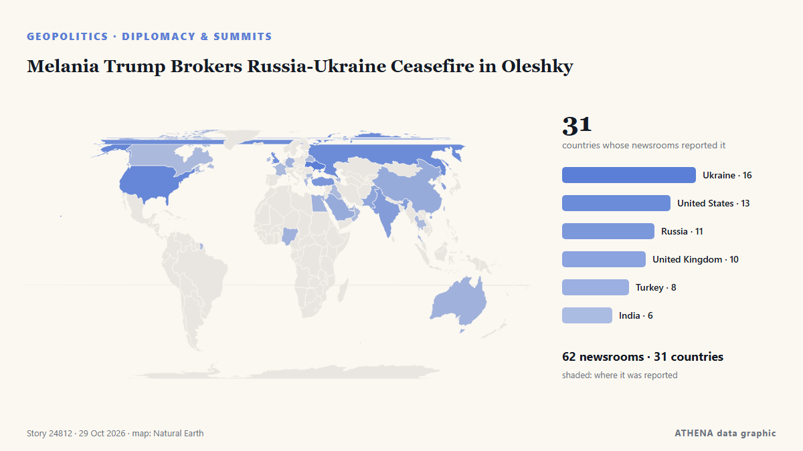

Melania Trump Brokers Russia-Ukraine Ceasefire in Oleshky

Residents of the Russian-occupied Ukrainian town have reported a worsening food crisis since 2022. from Express Tribune
Reported independently by 62 outlets in 31 countries since 23 Oct, first by Express Tribune; coverage is fading. ATHENA rates the risk moderate (3.4/10), driven mainly by the severity of the harm described and its geographic and sector reach. Confidence is 92% (high), with 62 independent outlets corroborating it and an average source reliability of 77%. Newsrooms by country: Ukraine (6), United States (4), Russia (4). Coverage: 23 Oct to 23 Oct, 7 hours.
Why it matters: Russia's full-scale invasion of Ukraine began in February 2022. This tracker follows the fighting, strikes on infrastructure and the diplomacy around the war, as covered by newsrooms around the world.
What changed: 7 new reports from 6 newsrooms in the 24 hours to 29 Oct.
First reported as: Officials confirm ceasefire for Russian-held Oleshky
At a glance
Selected, scored and written by ATHENA's published methodology. No editor intervenes in individual events. How this is produced ›
| 23 Oct 09:12 UTC | 26 |
|---|---|
| 23 Oct 15:12 UTC | 34 |
| 23 Oct 21:12 UTC | 4 |
| 24 Oct 03:12 UTC | 3 |
| 24 Oct 09:12 UTC | 1 |
| 24 Oct 15:12 UTC | 3 |
| 24 Oct 21:12 UTC | 2 |
| 25 Oct 03:12 UTC | 1 |
| 25 Oct 09:12 UTC | 1 |
| 25 Oct 15:12 UTC | 0 |
| 25 Oct 21:12 UTC | 0 |
| 26 Oct 03:12 UTC | 0 |
| 26 Oct 09:12 UTC | 1 |
| 26 Oct 15:12 UTC | 1 |
| 26 Oct 21:12 UTC | 5 |
| 27 Oct 03:12 UTC | 6 |
| 27 Oct 09:12 UTC | 11 |
| 27 Oct 15:12 UTC | 4 |
| 27 Oct 21:12 UTC | 1 |
| 28 Oct 03:12 UTC | 0 |
| 28 Oct 09:12 UTC | 0 |
| 28 Oct 15:12 UTC | 5 |
| 28 Oct 21:12 UTC | 0 |
| 29 Oct 03:12 UTC | 0 |
| 29 Oct 09:12 UTC | 2 |
| 23 Oct 13:31 UTC | 0.0 |
|---|---|
| 23 Oct 13:41 UTC | 1.1 |
| 23 Oct 13:43 UTC | 1.7 |
| 29 Oct 12:51 UTC | 3.7 |
| 29 Oct 12:51 UTC | 3.4 |
Why these numbers
Importance
Risk
Confidence
The reporting — who reported it, and when
headline as published · opens the original- Express Tribune · PakistanRussia, Ukraine agree to Oleshky ceasefire brokered by Melania Trump: White House
- CGTN (World) · ChinaRussia and Ukraine agree to temporary ceasefire in Oleshky
- Xinhua (English) — page reader · ChinaFlash: White House says Russia, Ukraine agree to temporarily stop military action in Oleshky
- APA (English) · AzerbaijanMelania Trump secures Oleshky ceasefire between Russia, Ukraine, White House says
- The Straits Times · SingaporeRussia, Ukraine agree to ceasefire in Ukrainian city hit by food crisis, brokered by Melania Trump
- Kyiv Independent · UkraineUkraine confirms Oleshky ceasefire mediated by Melania Trump between Russia, Ukraine
- Al Jazeera English · QatarMelania Trump ‘secured ceasefire’ in Ukrainian city of Oleshky: White House
- Business Recorder · PakistanMelania Trump secures Oleshky ceasefire between Russia, Ukraine, White House says
- Ukrainska Pravda (English) · UkraineWhite House claims Melania Trump has secured ceasefire in Oleshky
- Anadolu Agency (English) · TurkeyUS first lady announces ceasefire agreement between Russia and Ukraine in city of Oleshky
- CBS News (World) · United StatesMelania Trump secures "temporary ceasefire" in Ukrainian city
- Meduza (English) · RussiaRussia, Ukraine agree to ceasefire to evacuate Oleshky residents
- Cyprus Mail · CyprusRussia, Ukraine agree to Oleshky ceasefire brokered by Melania Trump
- PBS NewsHour · United StatesMelania Trump helps forge ceasefire deal in Russian-occupied Ukrainian city so aid can be delivered
- Xinhua (English) — page reader · ChinaUrgent: White House says Russia, Ukraine agree on ceasefire in Oleshky
- Novaya Gazeta Europe (EN) · RussiaRussia and Ukraine agreed to ceasefire in occupied Oleshky, White House says
- Times of India · IndiaRussia-Ukraine war: Melania's 'intervention' secures one-city ceasefire
- BBC News · United KingdomWhite House says Melania Trump brokered truce for Ukraine city 'on brink of disaster'
- The Jerusalem Post · IsraelMelania Trump secures Oleshky ceasefire between Russia, Ukraine, White House says
- The Moscow Times · RussiaMelania Trump Brokers Ceasefire in Occupied Ukraine’s Oleshky
- RTÉ News · IrelandOfficials confirm ceasefire for Russian-held Oleshky
- Vanguard · NigeriaMelania Trump says secured ceasefire in Ukrainian city of Oleshky
- Oman Observer · OmanMelania Trump claims ceasefire secured in Ukraine’s Oleshky
- Ukrinform (English) · UkraineMelania Trump announces localized ceasefire between Russia and Ukraine for Oleshky
- The Hill · United StatesMelania Trump brokers localized Russia-Ukraine ceasefire, White House says
- Fortune · United StatesWhite House says Melania Trump brokered a Russia-Ukraine ceasefire—but just in one city
- Kyiv Post · UkraineWhite House Says Russia, Ukraine Agree to Oleshky Truce
- TASS (English) · RussiaRussia, Ukraine agree to ceasefire in Alyoshki — White House
- NDTV · India"Situation Dire": Melania Trump Secures Ceasefire In Ukrainian City
- Cyprus Mail · CyprusKremlin confirms Oleshky ceasefire, says working with Ukraine on evacuation timing
- Novinite · BulgariaMelania Trump Brokers Russia-Ukraine Ceasefire in Oleshky
- The Straits Times · SingaporeKremlin confirms Oleshky ceasefire, says working with Ukraine on evacuation timing
- Ukrinform (English) · UkraineUkraine confirms local ceasefire to enable evacuation from Oleshky
- Anadolu Agency (English) · TurkeyMelania's focus is ‘to save children,’ Trump says after Oleshky truce deal
- Punch · NigeriaMelania Trump says secured ceasefire in Ukrainian city of Oleshky
- Ukrainska Pravda (English) · UkraineKremlin confirms ceasefire will be declared in Oleshky
- Anadolu Agency (English) · TurkeyKremlin welcomes Melania Trump’s efforts on Oleshky truce
- Indian Express · IndiaHow Melania Trump helped broker Oleshky ceasefire between Russia, Ukraine. White House reveals
- The Independent · United KingdomMelania Trump claims to have secured ceasefire for single Ukrainian town in surprising peace breakthrough
- CBC News · CanadaMelania Trump, Pope Leo broker humanitarian ceasefire for ravaged Ukraine city Oleshky